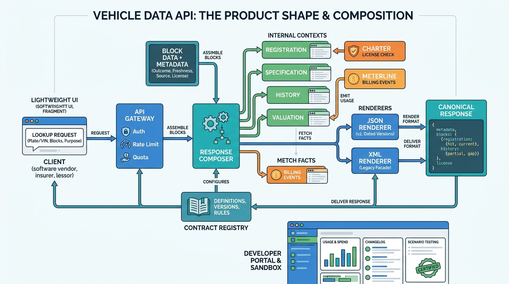

Part VI — DISTRIBUTION: APIs, Events and Data Products
Data as a Product: Designing Vehicle Data APIs

Image generated by Google Gemini (gemini-3-pro-image-preview)
Part VI — DISTRIBUTION: APIs, Events and Data Products

Image generated by Google Gemini (gemini-3-pro-image-preview)